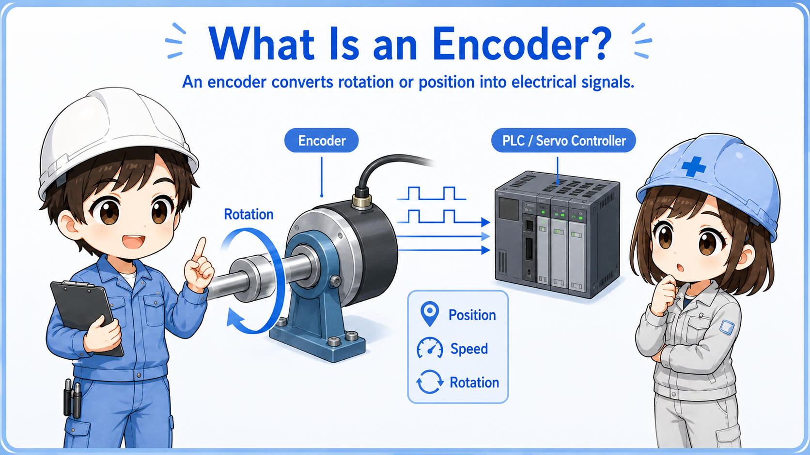
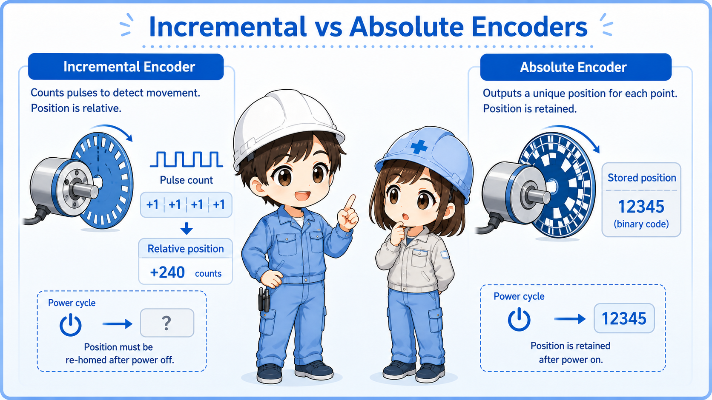
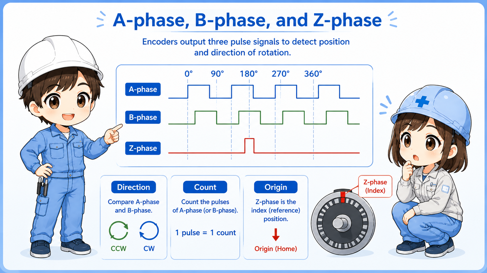
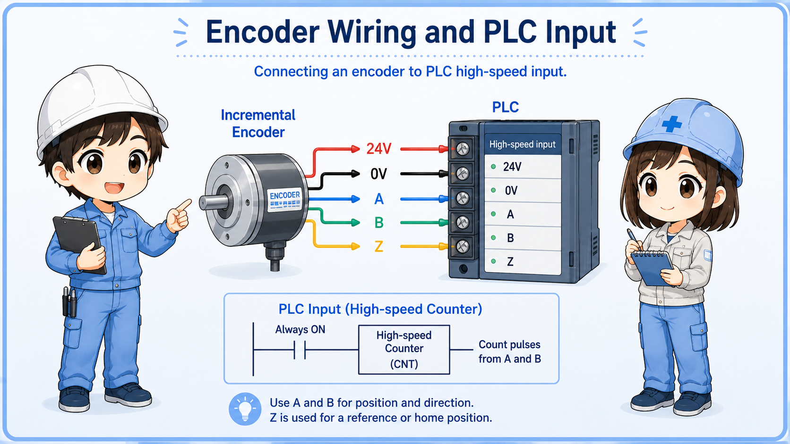

What is an encoder?
An encoder is a device that converts rotation, position, or movement into electrical signals.
In factory automation, encoders are used when a controller needs to know how far something moved, how fast it is rotating, or where a shaft or mechanism is positioned.
A simple sensor may only tell ON or OFF. An encoder gives more detailed movement information, often as pulses or digital position data.


An encoder is not just an ON/OFF sensor. It gives the controller information about movement, count, speed, or position.

So when I see encoder wiring, I should think about pulse signals, input speed, and whether the controller can read those signals correctly.
Model differences matter
Output method, power supply voltage, resolution, maximum response frequency, connector pinout, and wiring method differ by encoder model. Always confirm the official manual for the actual device.
Incremental and absolute encoders
The two common ideas are incremental counting and absolute position information.
| Type | Basic idea | Field image | Common caution |
|---|---|---|---|
| Incremental encoder | Outputs pulses as movement occurs. | The controller counts pulses to know movement amount and direction. | Position may need origin return or reference after power reset. |
| Absolute encoder | Outputs position information as a value. | The controller can know the current position more directly. | Communication method, battery, and parameter settings may be involved. |

Beginner takeaway
If you see A phase, B phase, or Z phase pulses, you are usually dealing with incremental encoder-style signals. If you see communication data or absolute position values, the checking method may be different.
Pulse signals: how movement becomes count information
With an incremental encoder, rotation is converted into repeated pulse signals.
Each pulse can represent a small amount of movement. The controller counts these pulses to calculate movement amount, speed, or rotation.
The number of pulses per rotation is often called resolution. A higher resolution can provide finer movement information, but the controller input must be able to read the pulse frequency.
Normal inputs may not be enough
Fast encoder pulses often require a high-speed counter input or dedicated module. A normal PLC input may miss pulses if the frequency is too high.
A phase, B phase, and Z phase
A/B phase is commonly used for direction and count. Z phase is often used as an origin or reference pulse.

A phase
One of the main pulse signals used for counting movement.
B phase
Another pulse signal shifted from A phase, used to determine direction.
Z phase
A reference pulse that is often used for origin or one-rotation reference.
Direction mismatch
If direction is reversed, check A/B phase wiring and controller settings before changing logic.
Terminology may vary
Some manuals use A, B, Z. Others may show phase names, channel names, or differential signal names. Always check the actual wiring diagram and terminal names.
Basic wiring points
Encoder wiring must match power supply, signal type, input circuit, and cable shielding requirements.
Encoder troubleshooting often starts from simple wiring checks. Confirm the power supply voltage, 0V/common, signal output type, shield connection, and whether the input module is suitable for the encoder.
| Check item | What to confirm | Why it matters |
|---|---|---|
| Power supply | Voltage rating, polarity, 0V/common. | Wrong voltage or missing common can stop signal output. |
| Output type | NPN/PNP, voltage output, open collector, line driver, differential output. | The PLC input must match the signal type. |
| Input speed | High-speed input or counter module specification. | If the pulse frequency is too high, counts may be missed. |
| Shield and cable | Shielded cable, grounding method, routing away from noise sources. | Noise can cause false counts or unstable signals. |
Use the drawing and manual together
The machine drawing tells you how the site intended to wire it. The encoder and PLC manuals tell you what the device actually requires.
Field checks when an encoder signal looks wrong
Do not start by replacing the encoder. Separate power, wiring, signal, input, and mechanical conditions.

1. Check power
Confirm encoder supply voltage and 0V/common at the connector or terminal.
2. Check signal type
Confirm whether the output is NPN, PNP, open collector, line driver, or another type.
3. Check input specification
Confirm the PLC high-speed input or counter module can read the expected pulse frequency.
4. Check A/B/Z wiring
Confirm terminal names, polarity, and direction-related wiring before changing settings.
5. Check noise and shield
Look for poor shielding, long cable runs, and routing near motors, inverters, or power lines.
6. Check mechanical side
Confirm coupling looseness, shaft slip, mounting gap, vibration, or mechanical damage.
Summary
An encoder is used when a control system needs movement, speed, count, or position information. Incremental encoders commonly output pulse signals such as A phase, B phase, and Z phase.
In the field, encoder problems should be checked in order: power supply, wiring, signal type, input module, pulse frequency, shielding, and mechanical mounting. Do not judge the encoder only from one symptom.
Final takeaway
An encoder is a movement information device. To troubleshoot it, check both the electrical signal path and the mechanical side that creates the movement.
Related articles
Read these next to connect encoder signals with practical object detection and field input diagnostics.